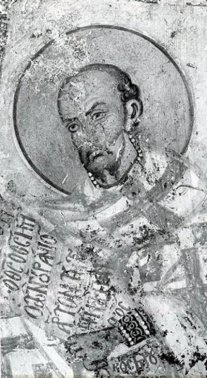
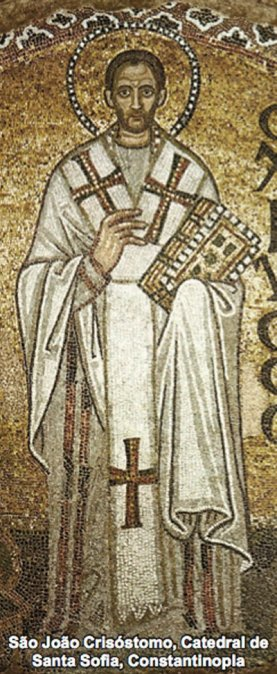
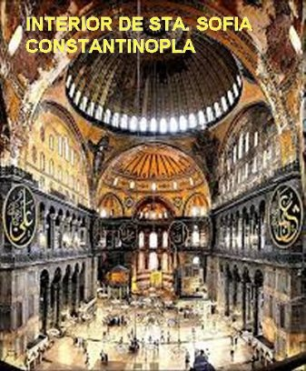
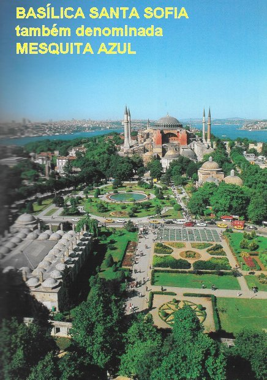
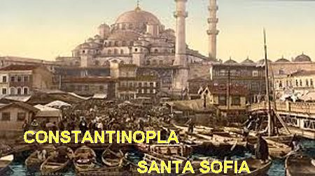

“ORADOR ADMIRÁVEL E BRILHANTE”
CRISÓSTOMO
Em
toda a história do Cristianismo João de Antioquia foi o Padre que mais se
destacou na eloquência, razão pela qual logo passou a ser chamado de 
PATRIARCA ARCEBISPO DE CONSTANTINOPLA

Com a determinação do Imperador Arcádio, no dia 28 de Fevereiro de 397, Padre João Crisóstomo recebeu do Arcebispo Teófilo, Patriarca de Alexandria, a ordenação episcopal, tornando-se Bispo, e o Imperador Arcádio o fez Arcebispo, entregando-lhe a Sé Cristã em Constantinopla.
ORGANIZANDO A SÉ BIZANTINA
Como se fazia necessário, o senhor Arcebispo João Crisóstomo logo de imediato quis organizar o seu trabalho, conforme os seus critérios. E assim, começou a varrer a sujeira e falsidades que existiam. Desde o início, projetou fazer uma reforma geral na Igreja: a austeridade do palácio episcopal tinha de ser um exemplo para todos: para o clero, viúvas, monges, pessoas da corte e também para os ricos. E por incrível que possa parecer, atingiu o Patriarca Teófilo da Alexandria que ficou meio desconfiado. Teófilo observando Crisóstomo tão correto nas homílias, e com tantas atividades pastorais, ficou invejoso. Na verdade, o Arcebispo Teófilo desejava colocar naquele posto uma pessoa da sua confiança, o Bispo Isidoro. Mas, a projeção do Padre Crisóstomo cresceu de maneira tão vertiginosa, que se espalhou pelo Grande Império Romano, colocando João em grande evidência.
Consciente do grande trabalho que teria de realizar na Capital do Império do Oriente, ele desenvolveu logo uma grande atividade pastoral, bem organizada, que suscitou admiração e perplexidade: porque logo ele realizou a evangelização rural, a criação de hospitais, procissões contra a doutrina Ariana que incomodava o Cristianismo e outras atividades. Tudo respeitosamente organizado e com a proteção da polícia imperial, objetivando evitar atritos com pessoas de outras seitas. Durante as Santas Missas, fazia sermões fortes, castigando certos vícios e friezas que deviam ser banidos; também fazia severas advertências aos monges indolentes e aos eclesiásticos preocupados com o enriquecimento. E assim, usando com sabedoria todos os recursos da retórica, alcançava os seus objetivos de ensinar, corrigir e recriminar os erros. Entretanto, embora sendo um pregador insuperável, João não era muito diplomático e por isso, as encrencas com a corte às vezes surgiam.
HONESTIDADE, RESPEITO E HONRADEZ
Moralizou os costumes do Clero, desde
a prática da castidade a posse e uso de bens materiais. Também, muitos Monges preferiam
permanecer mais tempo fora 
Pregava em todos os lugares, incansavelmente, reunindo enormes multidões que o ouviam com entusiasmo. Mostrou ser um pai amoroso por seus seguidores e falou com eles com familiaridade: regozijando-se com o progresso deles nas virtudes, e derramando lágrimas quando suas lições foram infrutíferas. Estranho à gratidão servil aos grandes homens da corte que haviam apoiado a sua nomeação, ele rapidamente atacou o excesso de luxo, prazeres e piedade hipócrita dos ricos, sem, contudo, acusá-los pelo nome. Ele mesmo deu o exemplo da pobreza evangélica cortando todo o luxo associado à pessoa do Arcebispo. Vendeu mercadorias da arquidiocese e objetos preciosos para distribuir o dinheiro aos pobres e construir hospitais e hospícios para estrangeiros. Ele não tinha nada próprio e se livrara de todas as preocupações relacionadas a convites e jantares oficiais: as refeições ele sempre fez sozinho, e se alimentava apenas do suficiente para sustentar o seu corpo, e nunca aceitava um convite, evidentemente para fugir das conversas mundanas. Por outro lado, praticou amplamente a hospitalidade, visitou os doentes e os prisioneiros, ajudou os pobres e os necessitados. Para evitar os jogos e espetáculos corruptos das almas, organizou procissões e cânticos que ressoavam na cidade de manhã à noite.
João sempre raciocinou de maneira correta e construtiva. Ele dizia: “Cada pessoa tem a sua responsabilidade na vida, assim como o dever fundamental de realizar a sua missão existencial. Esta missão também nos coloca, numa determinada medida, ser responsável pela própria salvação e a salvação dos demais”. Este é o princípio da vida social, de não ser egoísta e nem fechado, somente pensando em si e nas suas coisas! Dizia João: “Porque tudo se desenvolve entre dois pólos: a Grande Igreja e a Pequena Igreja, ou seja, a Igreja Doméstica, ou com mais clareza, a Família; tudo foi feito para as pessoas viverem numa recíproca relação de amizade, com dignidade respeitosa e fraterna”.
CRIOU COMUNIDADES E ESTIMULOU O DESEJO DE SERVIR

Também organizou as senhoras viúvas e as moças virgens para se consagrarem a DEUS e viverem em Comunidade, sob a direção de Santa Olímpia, que era uma jovem viúva muito rica, que empregou sua grande fortuna e sua vida, ao serviço de DEUS e do próximo.E inclusive, tinha grandes amigos como Brison, oficial da justiça a serviço da Imperatriz Eudóxia, que o auxiliava nas instruções aos fiéis como se fosse um catequista, e sempre se revelou um amigo fiel em todas as oportunidades.
A própria Imperatriz, em muitas ocasiões, lhe dava sinais de admiração e até de devotamento: frequentando seus sermões, seguindo procissões, oferecendo peças ornamentais para o culto e outras demonstrações de respeito e amizade. Do Imperador Arcádio, João conseguiu a promulgação de leis favoráveis à Cristianização de todo o Império.
Crisóstomo sempre estudioso compôs as orações da Santa Liturgia que ainda hoje são utilizadas na Igreja. Apesar de todas as suas tarefas pastorais, sua primeira ocupação foi à contemplação e meditação das Sagradas Escrituras. O zelo de João pela virtude se estendeu a todos que o cercavam, e ele trabalhou energicamente para reviver e purificar os costumes do Clero e excomungar certos Bispos simulados.Mostrou grande preocupação com as missões e a extensão do Evangelho aos bárbaros: em particular os godos, a quem ele deu uma Igreja em Constantinopla.
No entanto, toda essa boa atividade no quotidiano que beneficiava efetivamente o povo, logo também atraiu numerosas hostilidades contra ele mesmo, por parte de certos nobres de frágil devoção e alguns Bispos e outros Religiosos, mais interessados nas coisas do mundo, e que por isso mesmo, teciam todos os tipos de pretextos para caluniá-lo. O Arcebispo Teófilo de Alexandria foi um dos que se aproveitou desses rumores sempre buscando um meio de tecer alguma acusação contra João Crisóstomo. Inclusive chegou a propor que ele fosse julgado por um Conselho. Aliás, um Conselho que ele idealizou, composto apenas por seus apoiadores. O Imperador decidiu não levar a sério as acusações feitas contra o Arcebispo João Crisóstomo.
ATRITOS COM A CORTE IMPERIAL
Todavia, satanás valeu-se de pequenos acontecimentos para destruir a influência desse homem de DEUS. A inveja, o egoísmo e a intriga organizada foram às terríveis armas usadas pelo maldito. Eutrópio era o ajudante de câmara do Imperador, mas cometia muitos abusos de poder; por outro lado, admirava muito a atividade e a obra do Arcebispo João. Nas oportunidades João procurava corrigi-lo, mas sem resultado. Quando Eutrópio caiu em desgraça, aparecendo toda a sua podridão, procurou refúgio com Crisóstomo, para escapar dos seus inimigos. João desconhecendo os fatos errados praticados por Eutrópio, apenas com o intuito de ajudar, intercedeu em favor dele, o que não agradou à Corte.
Depois, a Imperatriz Elia Eudóxia
cometeu uma grave injustiça contra uma viúva, e Crisóstomo, sem conhecer a verdade
do assunto, apenas desejando ajudar a 
Duas semanas após aconteceu outro atrito, agora com o ariano Gainas, que era o Comandante dos Mercedários Godos do Exército Imperial, o qual, por iniciativa própria, requisitou uma Igreja em Constantinopla para alojar os seus soldados. Evidentemente, Crisóstomo opôs-se energicamente, porque os fiéis frequentadores da Igreja, teriam que procurar outra Igreja para participar das solenidades litúrgicas. No caso específico de alojamento para soldado, o mais prático seria construir um barracão para aquela finalidade.
Mas, estes acontecimentos se juntaram e deram o que falar! Em consequência ficou estabelecido certo distanciamento entre a Corte Imperial e o Palácio Episcopal, que logo desenhou o prenuncio de uma catástrofe. Uma situação grave para João, principalmente considerando que o grupo que apoiava os cortesãos foi ampliado por alguns eclesiásticos que gostavam e preferiam a vida cheia de atrativos da Corte à simplicidade de suas Dioceses, imposta pelo Arcebispo João Crisóstomo.
Mas, por outro lado, a fama de santidade, a sabedoria, a prudência e o fervor apostólico do homem de DEUS, granjearam a simpatia e confiança das outras Dioceses, e ele foi convidado por vários Bispos a presidir um sínodo regional em Éfeso, com o objetivo de indicar um novo Arcebispo e depor alguns Bispos acusados de simonia.